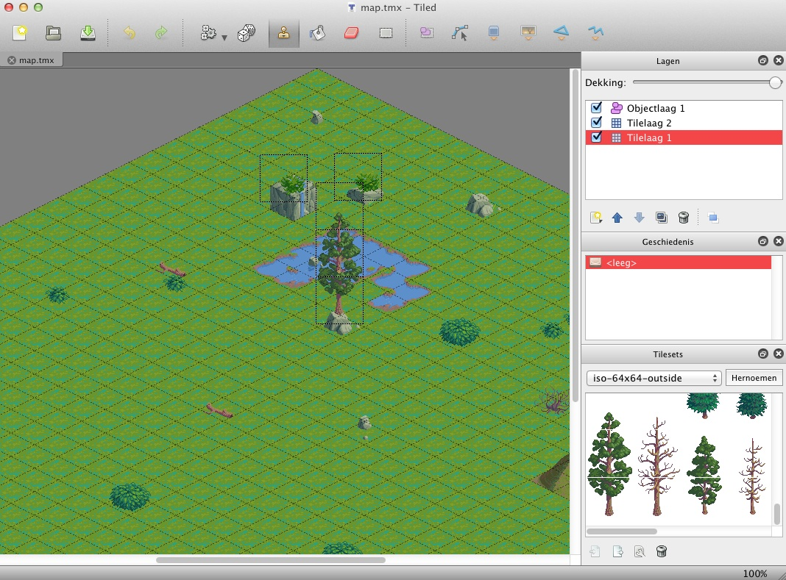

$("#isoWorldContainer").isoWorldEngine({
logging : false,
sound : false,
cropH : 10,
cropW : 10,
fps : 100,
showObjectBorders : false,
showTicker:true,
tmxFilePath : "world/",
tmxFile : "map.tmx"
});
$("#isoWorldContainer").isoWorldEngine.update = function() {
// do stuff on update event
}